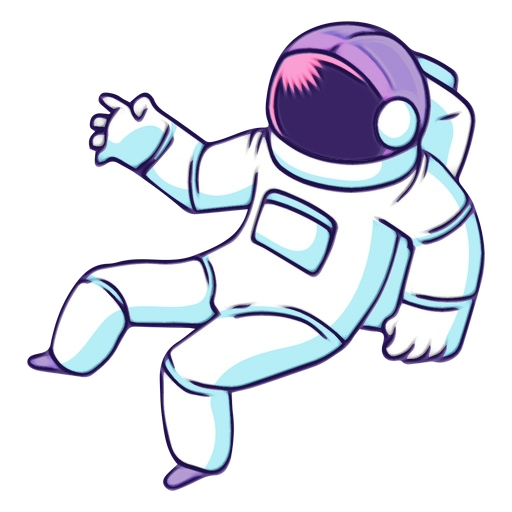

404
Lost in the Cosmos
Oops, the page you’re seeking doesn’t exist.
Perhaps it’s in another universe, or maybe a black hole ate it.
Let’s get you back home!

Oops, the page you’re seeking doesn’t exist.
Perhaps it’s in another universe, or maybe a black hole ate it.
Let’s get you back home!